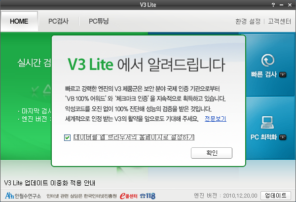

[부팅시 V3Lite 자동실행화면]안그래도 요새 금융권에서도 광고전화를 해놓고 은근히 광고수신 동의를 얻어내던데..
'전 관심 없는데요'
'정말로 관심이 없으세요? 고객님?'
'네'
'그럼 다음에 전화나 문자로 연락드리겠습니다. 괜찮으시죠 고객님?'
'네'
이 순간 광고전화와 문자 수신 동의를 한거다.
전화를 끊는 마당이라고 그냥 '네' 라고 대답했다가는 '나는 앞으로도 계속 이런 전화나 문자를 받겠소' 라고 대답한꼴이 되는거지.
V3 창도 무심코 엔터나 '확인'을 눌렀다간 브라우저 시작페이지를 교체당할뻔했다.
이놈들.
짜증나.